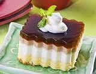

Puding Lapis Biscuit Mari

Bahan A, aduk rata:
- 125gram biscuit mari (tumbuk halus)
- 25gram coklat bubuk
- ½ sendok teh bumbu spekuk
- 2 sendok teh kulit jeruk purut, parut
- 50gram kurma tanpa biji (potong dadu)
Bahan B, kocok sampai mengembang:
- 75gram margarine
- 150gram gula palem
- ½ sendok teh garam
- 5 butir kuning telur
- 75cc santan kental
Puding:
- 400cc santan kental
- 1 bungkus agar - agar warna putih
- 1 sendok teh vanili
- 5 butir putih telur (kocok sampai kaku)
- 2 sendok makan air jeruk nipis
- 50 gram kurma tanpa biji (potong dadu)
- Pewarna makanan berwarna merah secukupnya
Cara Membuat:
- Masukkan bahan A ke dalam adonan bahan B sambil diaduk. Tuang adonan ke dalam Loyang beroles margarine dan kukus sampai matang, angkat. Dinginkan.
Cara Membuat Puding:
- Rebus santan, gula, agar – agar, vanili, dan garam sampai mendidih, angkat dan masukkan ke dalam putih telur yang sedang dikocok. Tambahkan air jeruk dan kocok sampai rata.
- Tuang 1 ½ bagian adonan agar – agar di atas kue dan ratakan. Sisanya diberi warna merah dan kurma. Aduk dan tuangkan di atasnya sampai mengeras. Potong – potong dan hidangkan
Tips: Pengunaan warna boleh mengikut selera masing-masing.